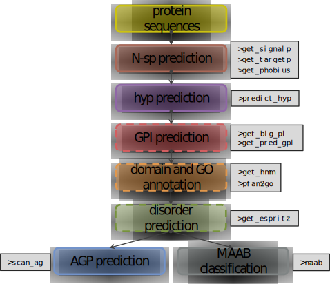
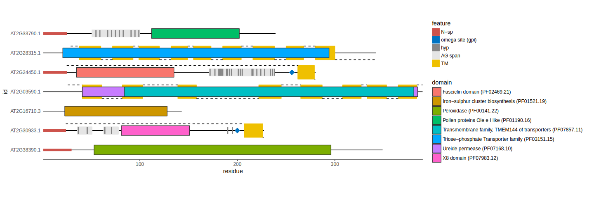
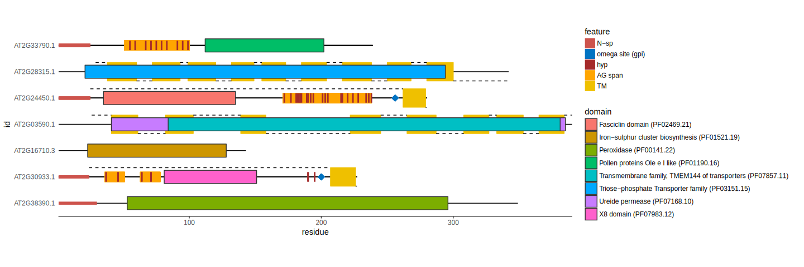

Abstract
This vignette provides an introduction into the functions and workflow inragp R package. ragp is designed for mining and analysis of plant Hydroxyproline rich glycoproteins but it can also be used for protein annotation and for obtaining predictions for several protein features based on sequence (secretory signals, transmembrane regions, domains and glycosylphosphatidylinositol attachment sites). Additionally ragp provides tools for visualization of the mentioned attributes.
Introduction
Hydroxyproline rich glycoproteins (HRGPs) are one of the most complex families of macromolecules found in plants, due to the diversity of glycans decorating the protein backbone, as well as the heterogeneity of the protein backbones. While this diversity is responsible for the wide array of physiological functions associated with HRGPs, it hinders attempts for homology based identification. Current approaches, based on identifying sequences with characteristic motifs and biased amino acid composition, are limited to prototypical sequences.
ragp is an R package for mining and analyses of HRGPs, with emphasis on arabinogalactan protein sequences (AGPs). The ragp filtering pipeline exploits one of the HRGPs key features, the presence of hydroxyprolines which represent glycosylation sites. Main package features include prediction of proline hydroxylation sites, amino acid motif and bias analyses, efficient communication with web servers for prediction of N-terminal signal peptides, glycosylphosphatidylinositol modification sites and protein disorder, as well as the ability to annotate sequences through hmmscan and subsequent GO enrichment, based on predicted pfam domains.
The workflow in ragp is illustrated with the following diagram (ragp functions to be used for each of the tasks are boxed grey):

The filtering layer:
- predict the presence of secretory signals (N-sp) and filter sequences containing them. Since several prediction algorithms are utilized (functions
get_signalp,get_targetpandget_phobius) this decision is reached by a majority vote.
- predict proline hydroxylation (function
predict_hyp) and filter sequences containing at least three potential hydroxyprolines.
The analysis layer:
- find localized clusters of characteristic arabinogalactan motifs (AG glycomodules) to identify potential AGPs (function
scan_ag) among the hydroxyproline containing sequences. - perform motif and amino acid bias (MAAB, (Johnson et al. 2017)) classification scheme (function
maab) to classify hydroxyproline containing sequences into 23 distinct HRGP groups.
- annotate domains using Pfam (function
get_hmm) and enrich with gene ontology (GO) terms (functionpfam2go).
- predict the presence of potential glycosylphosphatidylinositol attachment sites (functions
get_bit_piandget_pred_gpi).
- predict disordered regions in proteins (function
get_espritz).
Additionally ragp provides tools for visualization of the mentioned attributes via the function plot_prot.
Data import
To proceed with this guide the following R packages are required:
library(dplyr)
library(seqinr)
library(eulerr)
library(ragp)
library(ggplot2)The examples will be performed on a set of 2706 Arabidopsis protein sequences included in ragp package as the at_nsp data frame which contains four columns:
library(ragp)
data(at_nsp)
summary(at_nsp)
#> Transcript.id sequence is.signalP phobius
#> Length:2706 Length:2706 Mode :logical Mode :logical
#> Class :character Class :character FALSE:798 FALSE:72
#> Mode :character Mode :character TRUE :1908 TRUE :2634ragp functions require single letter protein sequences and the corresponding identifiers as input. These can be provided in the form of basic R data types such as vectors or data frames. Additionally ragp imports the seqinr package for the manipulation of .FASTA files, so the input objects can be a list of SeqFastaAA objects returned by the seqinr function read.fasta. The location of a .FASTA file is also possible as a type of input.
Input options will be illustrated using scan_ag function:
data(at_nsp) #a data frame of 2700 Arabidopsis protein sequences
input1 <- scan_ag(sequence = at_nsp$sequence,
id = at_nsp$Transcript.id) equivalent to:
input2 <- scan_ag(data = at_nsp,
sequence = "sequence",
id = "Transcript.id") same as without quotation:
input3 <- scan_ag(data = at_nsp,
sequence = sequence,
id = Transcript.id) A list of SeqFastaAA objects is also a viable input:
#write a FASTA file
seqinr::write.fasta(sequence = strsplit(at_nsp$sequence, ""),
name = at_nsp$Transcript.id, file = "at_nsp.fasta")
#read a FASTA file
At_seq_fas <- read.fasta("at_nsp.fasta",
seqtype = "AA",
as.string = TRUE)
input4 <- scan_ag(data = At_seq_fas) and lastly the location of a .FASTA file to be analyzed as string:
input5 <- scan_ag(data = "at_nsp.fasta") Filtering HRGPs
The filtering layer in ragp consists of two sequential tasks:
- predict the presence of secretory signals (N-sp) and filter sequences containing them.
- predict proline hydroxylation and filter sequences containing at least several potential hydroxyprolines.
The following section explains how to perform these tasks.
Predicting N-terminal secretory signal sequences (N-sp)
HRGPs are secreted proteins, therefore they are expected to contain a secretory signal sequence on the N-terminus (N-sp). ragp incorporates N-sp prediction by querying SignalP, TargetP (Emanuelsson et al. 2000) and Phobius (Käll, Krogh, and Sonnhammer 2007) in an efficient manner via the functions: get_signalp, get_targetp and get_phobius.
To query SignalP predictions:
nsp_signalp <- get_signalp(at_nsp,
sequence,
Transcript.id)The predictions for the 2700 sequences contained in at_nsp data frame should be available in around 1 minute. When handling large FASTA files with many sequences it is recommended to split them into smaller files each containing 10000 - 20000 sequences, using the ragp function split_fasta and to obtain predictions in a loop. The returned object nsp_signalp is a data frame resembling the web servers output:
head(nsp_signalp[,-c(1,10)]) #omitting columns "id" and "Networks.used"
#> Cmax Cmax.pos Ymax Ymax.pos Smax Smax.pos Smean Dmean Dmaxcut Networks.used is.signalp
#> 1 0.210 30 0.162 30 0.260 2 0.146 0.154 0.450 SignalP-noTM FALSE
#> 2 0.860 23 0.894 23 0.984 13 0.930 0.913 0.450 SignalP-noTM TRUE
#> 3 0.779 23 0.826 23 0.940 15 0.877 0.853 0.450 SignalP-noTM TRUE
#> 4 0.701 23 0.790 23 0.948 15 0.891 0.844 0.450 SignalP-noTM TRUE
#> 5 0.422 26 0.586 26 0.885 17 0.798 0.671 0.500 SignalP-TM TRUE
#> 6 0.797 29 0.870 29 0.987 18 0.952 0.914 0.450 SignalP-noTM TRUEsimilarly TargetP and Phobius can be queried by:
nsp_targetp <- get_targetp(at_nsp,
sequence,
Transcript.id)
nsp_phobius <- get_phobius(at_nsp,
sequence,
Transcript.id)The concordance of the predictions will be checked with Euler diagrams:
set.seed(5)
bind_cols(nsp_signalp, nsp_targetp, nsp_phobius) %>%
select(is.phobius, is.targetp, is.signalp) %>%
euler(shape = "ellipse", input = "disjoint") %>%
plot(quantities = T) 
The three servers do not agree completely therefore we recommend using the majority vote to predict if the protein is secreted:
bind_cols(nsp_signalp, nsp_targetp, nsp_phobius) %>%
select(is.phobius, is.targetp, is.signalp, id) %>%
mutate(vote = rowSums(.[,1:3])) %>%
filter(vote >= 2) %>%
pull(id) -> id_nsp
at_nsp2 <- filter(at_nsp, Transcript.id %in% id_nsp)This will create at_nsp2 data frame with 2126 sequences.
Predicting proline hydroxylation
The key feature of HRGPs is the presence of hydroxyprolines (Hyp, O) which represent glycosylation sites (Showalter et al. 2010). While many HRGPs can be found based on biased amino acid composition, or the presence of certain amino acid motifs, there exists an abundance of chimeric proteins comprised from specific domains and HRGP motifs which are much harder to identify based on the mentioned features. In an attempt to identify these types of sequences ragp incorporates a model specifically built to predict the probability of proline hydroxylation in plant proteins. This model is incorporated in the predict_hyp function and can be utilized to filter potential HRGPs.
at_hyp <- predict_hyp(data = at_nsp2,
sequence = sequence,
id = Transcript.id)The object returned by predict_hyp is a list with two elements prediction and sequence. The prediction element is a data frame containing the probability of hydroxylation for each P in each sequence along with the amino acid span used for prediction. First few rows of this element:
head(at_hyp$prediction)
#> id substr P_pos prob HYP
#> 1 AT2G43600.1 FSQNCMDTSCPGLKECCSRWG 31 0.01492346 No
#> 2 AT2G43600.1 EYCGFFCFSGPCNIKGKSYGY 58 0.01603031 No
#> 3 AT2G43600.1 YGYDYNVDAGPRGKIETVITS 76 0.01827260 No
#> 4 AT2G43600.1 ERYCSKSKKYPCEPGKNYYGR 163 0.01534502 No
#> 5 AT2G43600.1 CSKSKKYPCEPGKNYYGRGLL 166 0.01449253 No
#> 6 AT2G43600.1 YYGAGKHLGLPLLKDPDLVSR 194 0.01456114 NoThese predictions are based on a probability threshold of 0.224 which offers the best trade-off between specificity and sensitivity. To increase specificity at the cost of sensitivity the threshold can be increased using the tprob argument:
at_hyp2 <- predict_hyp(data = at_nsp2,
sequence = sequence,
id = Transcript.id,
tprob = 0.6)The at_hyp object can be used to filter the sequences that contain more than a certain number of hydroxyprolines. The default threshold will be used. To filter sequences with three or more O:
at_hyp$prediction %>%
group_by(id) %>%
summarise(n = sum(HYP == "Yes")) %>%
filter(n >= 3) %>%
pull(id) -> at_3hyp
at_nsp2 %>%
filter(Transcript.id %in% at_3hyp) -> at_nsp_3hypThere are 398 sequences that satisfy this condition.
Analyzing HRGPs
The analysis layer in ragp consists of:
- Arabinogalactan identification by finding localized clusters of characteristic motifs (AG glycomodules)
- Hydroxyproline rich glycoprotein classification by the motif and amino acid bias scheme (MAAB, (Johnson et al. 2017)).
- Domain annotation using Pfam data base and enrichment with gene ontology (GO) terms.
- Glycosylphosphatidylinositol attachment sites prediction.
- Identification of disordered regions in proteins.
Arabinogalactan identification
To check which of the filtered sequences are potential arabinogalactans the function scan_ag can be used. This function scans the protein sequences for AG glycomodule clusters, by constructing regular expressions based on user input.
By default scan_ag searches for at least three dipeptides PA, PS, PT, PG, PV, AP, SP, TP, GP and VP which are separated by maximally 10 amino acids. The minimal number of dipeptides to be considered can be changed by the argument dim while the maximum number of separating amino acids can be tweaked using the argument div. To consider only PA, PS, PT, AP, SP and TP dipeptides the type argument can be changed to "conservative". In cases when the dipeptides are ambiguous, such as SPT, PTP etc. all three amino acids will be counted as one dipeptide, while cases such as PTPA are considered as two dipeptides separated by zero amino acids. When the sequence object from predict_hyp function is passed to scan_ag only prolines predicted to be hydroxylated are considered when searching for dipeptides:
scaned_at <- scan_ag(data = at_nsp_3hyp,
sequence,
Transcript.id)The output object scaned_At can be a list, or a data frame depending on the simplify/tidy arguments. The default output is a data frame one row per sequences with five columns. Here are the 55 N-terminal amino acids from the Classical arabinogalactan protein 9 (AT2G14890.1) as an example:
scaned_at %>%
mutate(sequence = strtrim(sequence, 55)) %>%
select(-3) %>% #omitting 3rd column
filter(id == "AT2G14890.1")
#> id sequence total_length longest
#> 1 AT2G14890.1 marsfaiavicivliagvtgqAPTSPPTaTPAPPTPTTPpPAaTPpPVsAPpPVt 144 144The column “sequence” contains the input sequence where only the amino acids in potential AG glycomodules are in uppercase while all other are in lower case. The column “AG_aa” contains the amino acid count found in potential AG glycomodules, while columns “total_length” and “longest” correspond to the matched sequence spans.
True AG glycomodules contain hydroxyproline instead of proline in the dipeptides: OA, OS, OT, AO, SO and TO (and in some cases OG, OV, GO and VO) but the above output considers P instead of O since most of the time the positions of O are unknown. However if the sequence argument to scan_ag contains O’s at some positions, scan_ag will consider only them. To do this the sequence element of predict_hyp function output can be used:
scaned_at <- scan_ag(data = at_hyp$sequence,
sequence,
id)The 55 N-terminal amino acids from the Classical arabinogalactan protein 9:
scaned_at %>%
mutate(sequence = strtrim(sequence, 55)) %>%
select(-3) %>%
filter(id == "AT2G14890.1")
#> id sequence total_length longest
#> 1 AT2G14890.1 marsfaiavicivliagvtgqAOTSOOTaTOAOOTOTTOoOAaTOoOVsAOoOVt 144 144Extensin motifs in the form of SPPP+/SOOO+ are also detected by scan_ag if in correct context, to avoid this add exclude_ext = "yes" as an argument:
scaned_at <- scan_ag(data = at_hyp$sequence,
sequence,
id,
exclude_ext = "yes")
scaned_at %>%
mutate(sequence = strtrim(sequence, 55)) %>%
select(-3) %>%
filter(id == "AT2G14890.1")
#> id sequence total_length longest
#> 1 AT2G14890.1 marsfaiavicivliagvtgqAOTSOOTaTOAOOTOTTOoOAaTOoOVsAOoOVt 115 62to switch of all PPP+/OOO+ from being detected:
scaned_at <- scan_ag(data = at_hyp$sequence,
sequence,
id,
exclude_ext = "all")
scaned_at %>%
mutate(sequence = strtrim(sequence, 55)) %>%
select(-3) %>%
filter(id == "AT2G14890.1")
#> id sequence total_length longest
#> 1 AT2G14890.1 marsfaiavicivliagvtgqAOTSOOTaTOAOOTOTtoooaatooovsaooovt 68 52To disregard VP, PV, GP, PG and the corresponding hydroxyproline dipeptides:
scaned_at <- scan_ag(data = at_hyp$sequence,
sequence,
id,
type = "conservative")
scaned_at %>%
mutate(sequence = strtrim(sequence, 55)) %>%
select(-3) %>%
filter(id == "AT2G14890.1")
#> id sequence total_length longest
#> 1 AT2G14890.1 marsfaiavicivliagvtgqAOTSOOTaTOAOOTOTTOoOAaTOoovsAOoovt 144 144With default settings scan_ag identifies 234 sequences. To compare it with the number of sequences that would be filtered if the proline hydroxylation prediction was omitted the function can be run on at_nsp2 data:
scaned_at_nsp2 <- scan_ag(data = at_nsp2,
sequence,
Transcript.id)
sum(scaned_at_nsp2$total_length != 0)
#> [1] 707Thus the prediction of hydroxyprolines greatly reduced the pool of potential arabinogalactans.scan_ag is capable of identifying potential chimeric and short AGPs without pronounced amino acid bias and with few characteristic motifs. In combination with predict_hyp the specificity of the found sequences is greatly increased since the majority of sequences unlikely to contain hydroxyprolines are excluded.
Motif and amino acid bias classification - MAAB
The MAAB pipeline is explained in detail in Johnson et al. (2017). In short, after removal of sequences without a predicted N-sp and removal of sequences with predicted domains the sequences are first evaluated for amino acid bias. Sequences with > 45% of PAST (AGP bias) or PSKY (EXT bias) or PVKY (proline-rich proteins (PRP) bias) are grouped further into 24 distinct groups (23 of which represent HRGPs) based on amino acid bias, presence of GPIs and the following motifs (as regular expression):
- EXT: the SPn motif
SP{3,5}and the tyr motifs[FY].Y,KHY,VY[HKDE],V.YandYY.
- PRP:
PPV.[KT],PPV[QK]andKKPCPP.
- AGP:
[AVTG]P{1,3}and[ASVTG]P{1,2}.
The motifs are counted in a specific order ext > tyr > prp > agp, and overlapping motifs are not counted twice. Based on the final motif count and the overall coverage of the motifs HRGPs are clustered in the mentioned 24 groups. This classification can be performed using the ragp function maab:
maab_at <- maab(at_nsp_3hyp,
sequence,
Transcript.id)Of the 398 sequences in at_nsp_3hyp, 71 are predicted to belong to any of the HRGP classes (1 - 24). The output of the maab function is a data frame containing columns: id - sequence identifier; ext_sp, ext_tyr, prp and agp - corresponding motif count; past_percent, pvyk_percent, psky_percent, p_percent - percentage of the corresponding amino acids in sequence; coverage - the motif coverage; maab_class - the MAAB class. The first several hits:
maab_at %>%
filter(maab_class != "0") %>%
select(-ends_with("percent")) %>% #omitting columns ending with "percent"
head
#> id ext_sp ext_tyr prp agp coverage maab_class
#> 1 AT2G22470.1 0 0 0 21 0.3511450 1/4
#> 2 AT2G21140.1 0 0 4 5 0.1059190 24
#> 3 AT2G23130.1 0 0 0 32 0.3675676 1/4
#> 4 AT2G23130.2 0 0 0 32 0.4197531 1/4
#> 5 AT2G32300.1 0 1 0 16 0.1379310 24
#> 6 AT2G34870.1 0 0 0 6 0.1379310 24Since the function was not provided knowledge on the GPI presence, both possible classes are indicated as in: “1/4” or “2/9”. GPI presence can be indicated with the argument gpi which accepts a Boolean vector of the same length as the sequences, like the is.bigpi/is.gpi columns from the outputs of get_big_pi/get_pred_gpi functions. Another way to remove ambiguities in classes if GPI presence is unknown is to set get_gpi argument to "bigpi" or "predgpi":
maab_at <- maab(at_nsp_3hyp,
sequence,
Transcript.id,
get_gpi = "bigpi")maab_at %>%
filter(maab_class != "0") %>%
select(-ends_with("percent")) %>%
head
#> id ext_sp ext_tyr prp agp coverage maab_class
#> 1 AT2G22470.1 0 0 0 21 0.3511450 1
#> 2 AT2G21140.1 0 0 4 5 0.1059190 24
#> 3 AT2G23130.1 0 0 0 32 0.3675676 1
#> 4 AT2G23130.2 0 0 0 32 0.4197531 4
#> 5 AT2G32300.1 0 1 0 16 0.1379310 24
#> 6 AT2G34870.1 0 0 0 6 0.1379310 24This will run get_big_pi or get_pred_gpi only on the sequences that belong to one of the HRGP classes thus resolving class ambiguities that depend on GPI knowledge.
Domain annotation and GPI prediction
Domain annotation is a fundamental research tool in protein sequence analyses. In many occasions domain annotation has already been performed prior to HRGP mining, either by using hmmer (Eddy 2011), InterProScan (Jones et al. 2014) or some other resource. In such circumstances the annotation can be imported into R and joined with the filtered sequences. When this is not the case ragp offers the function get_hmm which queries the hmmscan web server (Finn, Clements, and Eddy 2011). Domain annotation is not necessary for AGP prediction although it enhances interpretation, but it is a fundamental part of the MAAB classification scheme. As with other ragp functions the first argument is the data, followed by the names of the columns containing the protein sequences and corresponding identifiers:
at_hmm <- get_hmm(at_nsp_3hyp,
sequence,
Transcript.id)The resulting data frame resembles the web server’s output, or for those familiar with the hmmer software the domain hits table produced by using the argument --domtblout. First few rows with several columns omitted:
head(at_hmm[,-c(4, 5, 8, 9, 11:13)])
#> id name acc align_start align_end ievalue
#> 1 AT2G43620.1 Glyco_hydro_19 PF00182.19 94 228 1.3e-37
#> 2 AT2G43620.1 Glyco_hydro_19 PF00182.19 237 283 1.6e-06
#> 3 AT2G43620.1 Chitin_bind_1 PF00187.19 30 64 1.9e-08
#> 4 AT2G43620.1 Chitin_bind_1 PF00187.19 164 168 8.5e+03
#> 5 AT2G43945.1 <NA> <NA> NA NA NA
#> 6 AT2G30933.1 X8 PF07983.13 81 151 2.6e-21HRGPs, and especially AGPs are often linked to the membrane by a glycosylphosphatidylinositol (GPI) anchor (Ellis et al. 2010). Attachment of the GPI moiety to the carboxyl terminus (omega-site) of the polypeptide occurs after proteolytic cleavage of a C-terminal propeptide. In order to predict the presence of the omega sites in the filtered sequences two functions are available: get_big_pi which queries the big-PI Plant Predictor (B. Eisenhaber et al. 2003) server and get_pred_gpi which queries the PredGPI (Pierleoni, Martelli, and Casadio 2008) server.
To query big-PI Plant Predictor:
at_gpi <- get_big_pi(at_nsp_3hyp,
sequence,
Transcript.id)This function provides detailed per sequence output when the argument simplify is set to FALSE, by default simplify is set to TRUE and the resulting data frame has one row per sequence:
head(at_gpi)
#> omega_site Quality PValue id is.bigpi
#> AT2G43620.1 257 None 1.122397e-01 AT2G43620.1 FALSE
#> AT2G43945.1 265 None 4.582008e-01 AT2G43945.1 FALSE
#> AT2G30933.1 200 P 6.822348e-05 AT2G30933.1 TRUE
#> AT2G30933.2 141 None 3.148265e-01 AT2G30933.2 FALSE
#> AT2G22470.1 107 P 3.425805e-08 AT2G22470.1 TRUE
#> AT2G43610.1 255 None 3.183057e-01 AT2G43610.1 FALSEsimilarly to query PredGPI:
at_gpi_pred <- get_pred_gpi(at_nsp_3hyp,
sequence,
Transcript.id)head(at_gpi_pred)
#> id omega_site specificity is.gpi
#> 1 AT2G43620.1 252 0.425 FALSE
#> 2 AT2G43945.1 268 0.478 FALSE
#> 3 AT2G30933.1 197 1.000 TRUE
#> 4 AT2G30933.2 139 0.478 FALSE
#> 5 AT2G22470.1 107 0.999 TRUE
#> 6 AT2G43610.1 260 0.160 FALSEDisorder prediction
A key structural feature of HRGPs, based on abundance of disorder-promoting residues, is that they are intrinsically disordered proteins. To identify potential disordered regions in proteins ragp contains get_espritz function which queries ESpritz (Walsh et al. 2012) web server. Three models trained on different data sets are available and can be selected via the argument model:
- ‘X-Ray’ - based on missing atoms from the Protein Data Bank (PDB) X-ray solved structures. If this option is chosen then the predictors with short disorder options are executed.
- ‘Disprot’ - contains longer disorder segments compared to x-ray. In particular, disprot is a manually curated database which is often based on functional attributes of the disordered region was used for this definition. Disorder residues are defined if the disprot curators consider the residue to be disordered at least once. All other residues are considered ordered. If this option is chosen then the predictors with long disorder options are executed.
- ‘NMR’ - based on NMR mobility. NMR flexibility is calculated using the Mobi server (Martin, Walsh, and Tosatto 2010) optimized to replicate the ordered-disordered NMR definition used in CASP8.
These models provide quite different predictions. To query ESpritz:
at_espritz <- get_espritz(at_nsp_3hyp,
sequence,
Transcript.id,
model = "NMR")The output of the function depends on the simplify argument. If simplify = TRUE (default) the output is a data.frame (one row per disordered region) with columns start and end which indicate the start and end of the predicted disordered region as well as the column id which is a protein identifier. When simplify = FALSE the output contains predicted probabilities of disorder for each amino acid.
Protein structure diagram
All of the above mentioned protein features can be visualized using the function plot_prot. It accepts protein sequences in the form of strings, calls the above mentioned functions to obtain sequence features and returns a ggplot object:
ind <- c(20, 23, 34, 52, 80, 127, 345) #some indexes which will be used to filter sequences
p1 <- plot_prot(sequence = at_nsp$sequence[ind],
id = at_nsp$Transcript.id[ind],
dom_sort = "ievalue") #to plot domains by independent e-value (lower on top)
p1
The diagram contains the following elements:
- Transmembrane regions (TM) are shown in yellow, extracellular regions are indicated by the dashed line above the sequences while intracellular regions are indicated by the dashed line bellow the sequence (as predicted by Phobius).
- Signal peptides (as predicted by SignalP) are indicated by the thick red line on the N-terminal side.
- GPI attachment sites (as predicted by Big Pi or PredGPI depending on the argument
gpi) are indicated by blue rhomboids. - Hydroxyprolines (as predicted by
predict_hyp) are indicated by vertical dark gray lines. - AG glycomodul spans are indicated by the light grey background.
- Domains (as predicted by hmmscan) are indicated by rectangles with an appropriate fill as indicated in the legend.
To change the order of domain plotting:
p1 <- plot_prot(sequence = at_nsp$sequence[ind],
id = at_nsp$Transcript.id[ind],
dom_sort = "cba") #to plot domains by name, first on top, also check "abc"
p1
To change the axis ratio:
p1 +
coord_equal(ratio = 50)
To change the domain colors use another fill palette:
p1 +
scale_fill_brewer(type = "div")
To change feature colors set them as arguments (hyp_col, gpi_col, nsp_col, ag_col and tm_col) to plot_prot:
p3 <- plot_prot(sequence = at_nsp$sequence[ind],
id = at_nsp$Transcript.id[ind],
hyp_col = "brown",
ag_col = "orange",
dom_sort = "cba")
p3
or use another color palette:
p1 +
scale_fill_brewer(type = "div")+
scale_color_brewer(type = "qual")
display disordered regions as predicted by ESpritz and choose predGPI to predict GPI positions:
p2 <- plot_prot(at_nsp$sequence[ind],
at_nsp$Transcript.id[ind],
gpi = "predgpi",
disorder = TRUE)
p2
Choose which features to plot when calling plot_prot:
p3 <- plot_prot(sequence = at_nsp$sequence[ind],
id = at_nsp$Transcript.id[ind],
hyp = FALSE,
ag = FALSE,
dom_sort = "cba")
p3
Add annotations to the plot (y axis is continuous):
p1 +
annotate(geom = "text",
y = 6,
x = 100,
label = "look at all these TMs") +
annotate(geom = "point",
y = 4,
x = c(237, 240, 298),
shape = 21,
fill = "dodgerblue",
size = 3)Acknowledgements
This software was developed with funding from the Ministry of Education, Science and Technological Development of the Republic of Serbia (Projects TR31019 and OI173024).
References
Eddy, Sean R. 2011. “Accelerated Profile HMM Searches.” PLOS Computational Biology 7 (10): 1–16. doi:10.1371/journal.pcbi.1002195.
Eisenhaber, Birgit, Michael Wildpaner, Carolyn J. Schultz, Georg H. H. Borner, Paul Dupree, and Frank Eisenhaber. 2003. “Glycosylphosphatidylinositol Lipid Anchoring of Plant Proteins. Sensitive Prediction from Sequence- and Genome-Wide Studies for Arabidopsis and Rice.” Plant Physiology 133 (4): 1691–1701. doi:10.1104/pp.103.023580.
Ellis, Miriam, Jack Egelund, Carolyn J. Schultz, and Antony Bacic. 2010. “Arabinogalactan-Proteins: Key Regulators at the Cell Surface?” Plant Physiology 153 (2): 403–19. doi:10.1104/pp.110.156000.
Emanuelsson, O., H. Nielsen, S. Brunak, and G. von Heijne. 2000. “Predicting Subcellular Localization of Proteins Based on Their N-Terminal Amino Acid Sequence.” Journal of Molecular Biology 300 (4): 1005–16. doi:10.1006/jmbi.2000.3903.
Finn, Robert D., Jody Clements, and Sean R. Eddy. 2011. “HMMER Web Server: Interactive Sequence Similarity Searching.” Nucleic Acids Research 39 (Web Server issue): W29–W37. doi:10.1093/nar/gkr367.
Johnson, Kim L., Andrew M. Cassin, Andrew Lonsdale, Antony Bacic, Monika S. Doblin, and Carolyn J. Schultz. 2017. “Pipeline to Identify Hydroxyproline-Rich Glycoproteins.” Plant Physiology 174 (2): 886–903. doi:10.1104/pp.17.00294.
Jones, Philip, David Binns, Hsin-Yu Chang, Matthew Fraser, Weizhong Li, Craig McAnulla, Hamish McWilliam, et al. 2014. “InterProScan 5: Genome-Scale Protein Function Classification.” Bioinformatics 30 (9): 1236–40. doi:10.1093/bioinformatics/btu031.
Käll, Lukas, Anders Krogh, and Erik L. L. Sonnhammer. 2007. “Advantages of Combined Transmembrane Topology and Signal Peptide Prediction–the Phobius Web Server.” Nucleic Acids Research 35 (Web Server issue): W429–432. doi:10.1093/nar/gkm256.
Martin, Alberto J. M., Ian Walsh, and Silvio C. E. Tosatto. 2010. “MOBI: A Web Server to Define and Visualize Structural Mobility in NMR Protein Ensembles.” Bioinformatics 26 (22): 2916–7. doi:10.1093/bioinformatics/btq537.
Pierleoni, Andrea, Pier Luigi Martelli, and Rita Casadio. 2008. “PredGPI: A GPI-Anchor Predictor.” BMC Bioinformatics 9 (September): 392. doi:10.1186/1471-2105-9-392.
Showalter, Allan M., Brian Keppler, Jens Lichtenberg, Dazhang Gu, and Lonnie R. Welch. 2010. “A Bioinformatics Approach to the Identification, Classification, and Analysis of Hydroxyproline-Rich Glycoproteins.” Plant Physiology 153 (2): 485–513. doi:10.1104/pp.110.156554.
Walsh, Ian, Alberto J. M. Martin, Tomàs Di Domenico, and Silvio C. E. Tosatto. 2012. “ESpritz: Accurate and Fast Prediction of Protein Disorder.” Bioinformatics 28 (4): 503–9. doi:10.1093/bioinformatics/btr682.